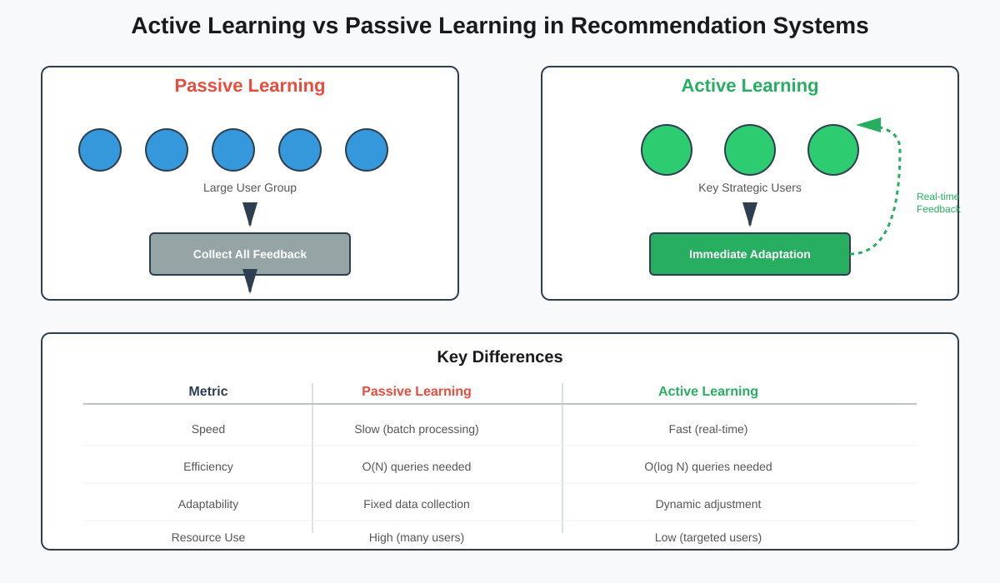
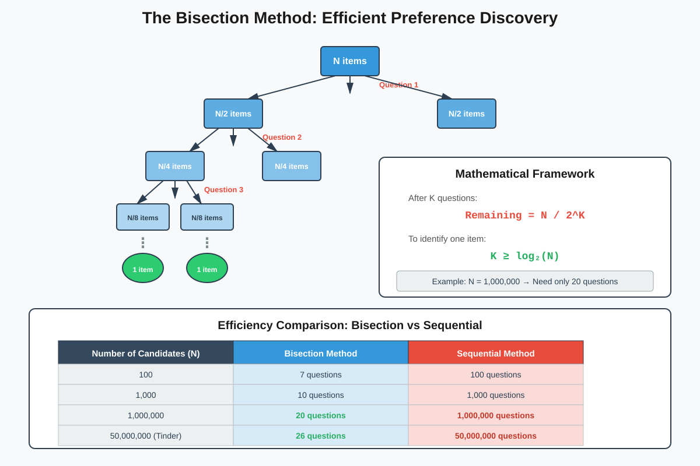
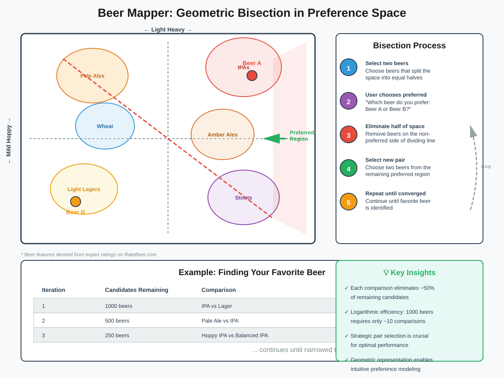

Active Learning in Recommendation Systems
Quick Navigation
- Introduction
- Active vs Passive Learning
- The Bisection Method
- Real-World Applications
- Mathematical Foundations
- Implementation Examples
- References & Further Reading
Introduction
Active learning represents a fundamental shift in how recommendation systems gather and utilize user feedback. Unlike traditional passive learning approaches that collect data from large user groups before making adjustments, active learning enables systems to interact dynamically with users and refine recommendations in real-time.

Core Concept:
Active learning leverages the interactive nature of online platforms to strategically select which information to request from users, optimizing both the quality and efficiency of the learning process.
Key Advantages:
- Real-time adaptation: Immediate adjustment of recommendations based on user feedback
- Efficient data collection: Strategic selection of queries minimizes required user interactions
- Improved accuracy: Targeted questioning yields more informative data than passive collection
- Resource optimization: Reduced need for large-scale data collection before deployment
Historical Context:
Active learning has been successfully implemented in various domains, including clinical trials where drug dosages are adjusted based on patient responses in sequential phases. This iterative approach allows for early detection of adverse effects and optimization of treatment protocols.
Active vs Passive Learning
Understanding the distinction between active and passive learning is crucial for designing effective recommendation systems.
Passive Learning Characteristics:
- Batch processing: System waits for complete dataset before making adjustments
- Fixed data collection: Predetermined set of users and items for evaluation
- Delayed feedback loop: Recommendations updated only after full data collection cycle
- Limited adaptability: Cannot respond to emerging patterns during collection phase
Active Learning Characteristics:
- Sequential processing: System adapts continuously as new data arrives
- Strategic selection: Intelligently chooses which users and items to query
- Immediate feedback loop: Recommendations refined in real-time based on responses
- High adaptability: Responds dynamically to emerging patterns and preferences
Netflix Example:
Consider Netflix acquiring rights to "Moneyball" - a film with ambiguous categorization:
- Sports movie? Contains baseball themes
- Finance movie? Focuses on analytics and budgeting
- Drama? Character-driven narrative
- Teen movie? Features Jonah Hill
- Romance? Includes Brad Pitt
Passive Approach:
Recommend to large user group → Wait for all feedback → Analyze results → Update recommendations
Active Approach:
Recommend to key users → Receive immediate feedback → Adjust real-time → Strategically select next users
The active approach identifies the film's true audience segments more rapidly and efficiently.
The Bisection Method
The bisection method forms the mathematical foundation for efficient active learning, enabling systems to identify preferences with logarithmic complexity.

Core Principle:
Split the candidate space into approximately equal halves with each query, maximizing information gain per question.
Mathematical Framework:
Starting with N candidates, after K well-designed questions:
Remaining candidates = N / 2^K
To isolate a single candidate:
N / 2^K ≤ 1
Solving for K:
K ≥ log₂(N)
Practical Implications:
- 1 million candidates: Requires only 20 questions
- 50 million candidates: Requires only 26 questions
- 1 billion candidates: Requires only 30 questions
The 20 Questions Game:
Classic example of bisection method in action:
- Question 1: "Is this person alive?" → Eliminates ~50% of candidates
- Question 2: "Is this person male?" → Eliminates ~50% of remaining candidates
- Question 3: "Is this person from North America?" → Further reduces by ~50%
- Progressive refinement: Questions become increasingly specific as candidate pool narrows
Optimal Question Design:
- Early questions: Broad categories that split population evenly
- Middle questions: Domain-specific attributes with balanced distribution
- Final questions: Highly specific characteristics to distinguish remaining candidates
Computer Implementation:
Computers excel at bisection because they can:
- Calculate optimal splits: Analyze candidate distributions to find balanced partitions
- Maintain candidate tracking: Efficiently manage and update remaining possibilities
- Evaluate information gain: Quantify the value of each potential question
Real-World Applications
Active learning powers numerous successful platforms, each adapting the bisection method to their specific domain.
🎯 Tinder: Soulmate Discovery
With 50 million users, theoretically requires only 26 optimal questions to identify best match.
Challenge:
Tinder uses simple yes/no questions on individual profiles, which represents the opposite of bisection:
- Bisection split: N → N/2 candidates
- Tinder split: N → (N-1) or 1 candidates
This requires approximately N questions instead of log₂(N) questions.
Success Strategy:
Despite inefficient questioning, Tinder succeeds through:
- Volume: Massive user base compensates for inefficient queries
- Engagement: Simple questions maintain user interest
- Implicit learning: Profile interactions reveal preferences beyond explicit answers
- Network effects: Each interaction generates valuable data for entire system
😺 KittenWar.com: Cuteness Ranking
Ranks kittens by repeatedly asking users to choose between two photos.
Implementation:
- Pairwise comparisons: Users select cuter kitten from two options
- Ranking algorithm: Aggregates comparisons to generate global ranking
- Active selection: System strategically selects which pairs to show next
- Uncertainty reduction: Prioritizes comparisons that resolve ranking ambiguities
🍺 Beer Mapper: Preference Discovery
Identifies user's beer preferences through strategic comparisons.

Geometric Representation:
Beer Mapper creates multi-dimensional space based on:
- Expert ratings: Data from RateBeer.com
- Flavor profiles: Attributes like hoppy, malty, bitter, sweet
- Style categories: IPA, stout, lager, ale, etc.
- User preferences: Historical ratings and selections
Bisection Implementation:
Step 1: Select two beers that partition space into equal halves
Step 2: User chooses preferred beer
Step 3: Eliminate half of candidate beers
Step 4: Select two beers from remaining region
Step 5: Repeat until favorite beer identified
Advanced Technique:
Beyond identifying single favorite, Beer Mapper can:
- Generate full rankings: Place user in multi-dimensional preference space
- Predict ratings: Estimate ratings for untried beers
- Recommend discoveries: Suggest beers in preferred region user hasn't tried
- Refine over time: Continuously update preference model with new comparisons
Key Success Factors:
- Strategic pair selection: Choose beers that maximize information gain
- Geometric modeling: Represent beers in meaningful feature space
- Adaptive questioning: Adjust queries based on previous responses
- Efficient convergence: Minimize comparisons needed to identify preferences
Mathematical Foundations
The theoretical underpinnings of active learning in recommendation systems rely on information theory and optimization principles.
Information Gain:
Each query should maximize expected information gain:
IG(Q) = H(P) - E[H(P|Q)]
Where:
- IG(Q): Information gain from query Q
- H(P): Current entropy of preference distribution
- E[H(P|Q)]: Expected entropy after observing query response
- Goal: Select queries that maximize IG(Q)
Complexity Analysis:
Bisection Method:
- Time complexity: O(log N) queries required
- Space complexity: O(N) to store candidate set
- Convergence rate: Exponential reduction in candidate space
Sequential Method (Tinder-style):
- Time complexity: O(N) queries required
- Space complexity: O(N) to store candidates
- Convergence rate: Linear reduction in candidate space
Comparison:
For N = 1,000,000 candidates:
- Bisection method: ~20 queries
- Sequential method: ~1,000,000 queries
- Efficiency gain: 50,000x improvement
Query Selection Optimization:
Select next query q* that maximizes expected utility:
q* = argmax_q E[U(q)]
Utility Function Components:
- Information value: How much uncertainty does query resolve?
- User cost: How difficult or annoying is query for user?
- System cost: Computational resources required to process response
- Engagement: Does query maintain user interest?
Bayesian Update Framework:
After each query response, update belief distribution:
P(θ|D, r) ∝ P(r|θ, D) × P(θ|D)
Where:
- θ: User preference parameters
- D: Historical data
- r: Current query response
- P(θ|D, r): Updated posterior belief
- P(r|θ, D): Likelihood of response given preferences
- P(θ|D): Prior belief before query
Multi-Armed Bandit Framework:
Active learning can be formulated as exploration-exploitation tradeoff:
Exploration:
- Query items with high uncertainty to learn preferences
- Gather information for future recommendations
- Risk: May show user suboptimal items
Exploitation:
- Recommend items expected to have highest ratings
- Maximize immediate user satisfaction
- Risk: May miss better items due to uncertainty
Balance Strategy:
Use algorithms like Upper Confidence Bound (UCB) or Thompson Sampling:
UCB: Select item i with highest score = μᵢ + c × √(ln(t) / nᵢ)
Where:
- μᵢ: Estimated mean reward for item i
- nᵢ: Number of times item i has been tried
- t: Total number of trials
- c: Exploration parameter
Implementation Examples
Practical implementations of active learning in recommendation systems with code examples and best practices.
🔨 Basic Bisection Recommender

Core Algorithm:
class BisectionRecommender:
def __init__(self, items, feature_space):
self.items = items
self.feature_space = feature_space
self.candidate_items = items.copy()
def select_query_pair(self):
"""Select two items that best partition candidate space"""
if len(self.candidate_items) <= 2:
return self.candidate_items
# Find hyperplane that splits candidates into equal halves
centroid = self.compute_centroid(self.candidate_items)
direction = self.compute_optimal_direction()
# Select items on opposite sides of hyperplane
item_a = self.find_farthest_item(centroid, direction, side=1)
item_b = self.find_farthest_item(centroid, direction, side=-1)
return item_a, item_b
def update_candidates(self, preferred_item):
"""Eliminate half of candidates based on preference"""
# Keep only items similar to preferred item
preference_vector = self.feature_space[preferred_item]
# Calculate similarity scores
similarities = [
self.cosine_similarity(preference_vector, self.feature_space[item])
for item in self.candidate_items
]
# Keep top 50% most similar items
median_similarity = np.median(similarities)
self.candidate_items = [
item for item, sim in zip(self.candidate_items, similarities)
if sim >= median_similarity
]
🎬 Netflix Movie Recommendation
Scenario: New movie added with uncertain categorization
class ActiveMovieRecommender:
def __init__(self, movie_id, user_database):
self.movie_id = movie_id
self.users = user_database
self.feedback_history = []
def select_key_users(self, n=10):
"""Select diverse users for initial feedback"""
# Choose users representing different preference clusters
user_clusters = self.cluster_users_by_preferences()
selected_users = []
for cluster in user_clusters:
# Select most active user from each cluster
representative = max(cluster, key=lambda u: u.activity_score)
selected_users.append(representative)
if len(selected_users) >= n:
break
return selected_users
def collect_feedback_sequential(self, users):
"""Collect and adapt in real-time"""
for user in users:
# Show movie to user
rating = self.request_rating(user, self.movie_id)
self.feedback_history.append((user, rating))
# Update movie representation immediately
self.update_movie_features(rating, user.preference_profile)
# Adjust next user selection based on current feedback
if rating > 4.0:
# Movie performing well, find similar users
users = self.find_similar_users(user)
elif rating < 2.0:
# Movie performing poorly, find contrasting users
users = self.find_contrasting_users(user)
🍺 Beer Preference Discovery
Implementation of geometric bisection:
class BeerPreferenceMapper:
def __init__(self, beer_database):
self.beers = beer_database
self.feature_space = self.load_beer_features()
self.user_region = self.initialize_full_space()
def find_optimal_pair(self):
"""Find beer pair that best splits current region"""
# Calculate principal axis of current region
region_beers = self.get_beers_in_region(self.user_region)
pca = PCA(n_components=1)
pca.fit([self.feature_space[beer] for beer in region_beers])
principal_axis = pca.components_[0]
# Project beers onto principal axis
projections = {
beer: np.dot(self.feature_space[beer], principal_axis)
for beer in region_beers
}
# Find beers at extremes of principal axis
beer_a = max(projections, key=projections.get)
beer_b = min(projections, key=projections.get)
return beer_a, beer_b
def update_region(self, preferred_beer, rejected_beer):
"""Constrain region based on preference"""
# Define separating hyperplane
preferred_features = self.feature_space[preferred_beer]
rejected_features = self.feature_space[rejected_beer]
normal_vector = preferred_features - rejected_features
midpoint = (preferred_features + rejected_features) / 2
# Update region to half-space containing preferred beer
self.user_region.add_constraint(normal_vector, midpoint)
# Check if region sufficiently small
if self.region_diameter() < self.convergence_threshold:
return self.get_favorite_beer()
return None # Continue querying
🎯 Tinder-Style Sequential Recommender
Adapting to yes/no decisions:
class SequentialMatcher:
def __init__(self, candidate_pool):
self.candidates = candidate_pool
self.user_preferences = []
self.rejection_patterns = []
def select_next_profile(self):
"""Select profile to maximize information gain"""
if len(self.user_preferences) < 5:
# Early stage: show diverse profiles
return self.select_diverse_profile()
else:
# Later stage: show profiles similar to accepted ones
return self.select_similar_profile()
def select_diverse_profile(self):
"""Choose profile maximally different from shown profiles"""
shown_profiles = [p for p, _ in self.user_preferences]
max_distance = -1
best_profile = None
for candidate in self.candidates:
if candidate in shown_profiles:
continue
# Calculate minimum distance to any shown profile
min_dist = min(
self.profile_distance(candidate, shown)
for shown in shown_profiles
)
if min_dist > max_distance:
max_distance = min_dist
best_profile = candidate
return best_profile
def select_similar_profile(self):
"""Choose profile similar to accepted ones"""
accepted_profiles = [p for p, decision in self.user_preferences if decision]
if not accepted_profiles:
return self.select_diverse_profile()
# Create preference model from accepted profiles
preference_vector = np.mean(
[self.profile_features(p) for p in accepted_profiles],
axis=0
)
# Find most similar unshown profile
shown_profiles = [p for p, _ in self.user_preferences]
best_similarity = -1
best_profile = None
for candidate in self.candidates:
if candidate in shown_profiles:
continue
similarity = self.cosine_similarity(
self.profile_features(candidate),
preference_vector
)
if similarity > best_similarity:
best_similarity = similarity
best_profile = candidate
return best_profile
Performance Comparison Table:
| Method | Queries Required | User Effort | Convergence Speed | Best Use Case |
|---|---|---|---|---|
| Bisection | O(log N) | Medium | Fast | Well-defined feature spaces |
| Sequential | O(N) | Low | Slow | Engagement-critical platforms |
| Hybrid | O(√N) | Medium | Medium | Balance efficiency and engagement |
| Bandits | O(log T) | Variable | Fast | Exploration-exploitation tradeoff |
🔗 Hugging Face Resources:
📄 Related ArXiv Papers:
References & Further Reading
📚 Foundational Papers:
- Settles, B. (2009). "Active Learning Literature Survey." Computer Sciences Technical Report 1648, University of Wisconsin–Madison.
-
Comprehensive survey of active learning techniques and theory
-
Li, L., Chu, W., Langford, J., & Schapire, R. E. (2010). "A Contextual-Bandit Approach to Personalized News Article Recommendation." WWW 2010.
-
Application of bandit algorithms to recommendation systems
-
Rubens, N., Elahi, M., Sugiyama, M., & Kaplan, D. (2015). "Active Learning in Recommender Systems." Recommender Systems Handbook.
- Detailed treatment of active learning specifically for recommendations
🔬 Advanced Research:
- Boutilier, C., Zemel, R., & Marlin, B. (2003). "Active Collaborative Filtering." UAI 2003.
-
Harpale, A., & Yang, Y. (2008). "Personalized Active Learning for Collaborative Filtering." SIGIR 2008.
-
Personalized query selection strategies
-
Elahi, M., Ricci, F., & Rubens, N. (2014). "Active Learning in Collaborative Filtering Recommender Systems." E-Commerce and Web Technologies.
- Practical implementations and case studies
🌐 Online Resources:
- Interactive Demo: Beer Mapper Algorithm Visualization
-
Live demonstration of geometric bisection in preference discovery
-
Course Material: Stanford CS246: Mining Massive Datasets
- Includes sections on recommendation systems and active learning
📖 Books:
- Aggarwal, C. C. (2016). Recommender Systems: The Textbook. Springer.
- Ricci, F., Rokach, L., & Shapira, B. (2015). Recommender Systems Handbook. Springer.
Document Information:
- Topic: Active Learning in Recommendation Systems
- Target Audience: AI Engineers, ML Researchers, Data Scientists
- Prerequisites: Basic understanding of machine learning, recommendation systems
- Difficulty Level: Intermediate to Advanced
This documentation is part of a comprehensive guide to modern recommendation system techniques. For related topics, see: Collaborative Filtering, Matrix Factorization, and Deep Learning for Recommendations.